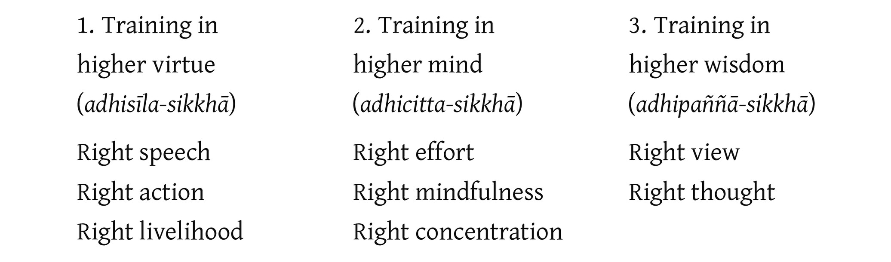

Introduction to the Middle Way

Introduction
The Middle Way (majjhimā-paṭipadā), also known as the Path (magga, i.e. the fourth Noble Truth), embodies a set of principles for Buddhist practice: it is a complete code of Buddhist conduct. It comprises the practical teachings, based on an understanding of Buddhist theoretical teachings, which guide people to the goal of Buddhism according to natural processes. It is a way of actualizing the teachings in one’s own life, a method of applying natural laws and benefitting from them to the highest degree. To gain an initial understanding of the Middle Way, let us consider this teaching by the Buddha from the first sermon, the Dhammacakkappavattana Sutta:
The Path as the Middle Way
Monks, these two extremes should not be followed by one who has gone forth into homelessness. What two? The indulgence in sensual happiness in sense pleasures, which is inferior, vulgar, low, ignoble, and hollow; and the pursuit of self-mortification, which is painful, ignoble, unbeneficial. The Tathāgata has awakened to the Middle Way, which does not get caught up in either of these extremes, which gives rise to vision, which gives rise to knowledge, which leads to peace, to direct knowledge, to enlightenment, to Nibbāna.
And what is that Middle Way (majjhimā-paṭipadā)…? It is this Noble Eightfold Path; that is, right view, right thought, right speech, right action, right livelihood, right effort, right mindfulness, right concentration.
V. I. 10; S. V. 421.
This teaching provides a complete summary of the meaning, essence, and purpose of the Middle Way. Note that it is a ’middle’ way, or ’middle’ path, because it does not get caught up in either of the two extremes (note, however, that this should not be understood to mean that the path lies between these two extremes):
-
Kāma-sukhallikānuyoga: indulgence in sensual pleasures; the extreme of sensual indulgence; extreme hedonism.
-
Atta-kilamathānuyoga: the extreme of self-mortification; extreme asceticism.
Occasionally, Buddhists and non-Buddhists alike give the expression the ’middle way’ a very broad meaning, to denote an action or thought that lies between two opposing actions or thoughts, or between actions and thoughts performed and held by two separate people or parties.
This kind of midpoint or middle way does not have any solid basis; one must wait until two opposing parties arise in order to determine the halfway point, which hinges on the degree of belief or practice of these two factions. The midway shifts according to the changing stances of the two sides. Sometimes this kind of middle way appears to be the same as the Middle Way in Buddhism (majjhimā-paṭipadā), but in fact it is counterfeit. {526}
The true Middle Way has definite criteria. The validity of the Middle Way rests with it having a clearly defined objective or goal. With the goal clearly defined, the path leading to this goal, or conduct that is apt, correct, and fruitful, is the Middle Way.
This is similar to shooting an arrow or a gun – it is necessary to have a clear target. Accurate or correct shooting is any action expedient to having the arrow or bullet reach the target. The ’middle way’ in this context is shooting precisely and directly at the target.
All deviating shots, veering off to any number of directions, are flawed and inaccurate. In contrast to these errant shots, one sees that there is only one target, which is directly in the middle and clearly defined, and the path leading to the target likewise is a middle path.
The correct path has its own true goal, which is not determined by trajectories of the errant shots. The Middle Way has the definite goal of liberation – the end of suffering.
The Path (magga) – the system of thought, action, and conduct that is consistent with and effective in regard to this goal – is thus the ’Middle Way’ (majjhimā-paṭipadā).
Because the Middle Way has a clearly defined goal, or because the Middle Way is dependent on having such a goal, a Dhamma practitioner must know this goal in order to walk on the Path – one must know in which direction one is going. For this reason the Middle Way is a path of wisdom and begins with right view: it begins with an understanding of one’s problems and of one’s destination. It is a path of understanding, reason, and acceptance, and requires courage to face the truth.
When people possess this knowledge and courage, they are able to manage their lives on their own, to live a correct and virtuous life independently, without relying on external sacred, supernatural, or divine powers. And when people have developed confidence based on their own wisdom, they need not get caught up in and worried about things they believe to exist outside of the normal human sphere. This confidence is one attribute of the Middle Way.
When one understands one’s problems and the way to the goal, a traveller on the Path gains the additional understanding that the Middle Way gives value to one’s life. There is more to life than succumbing to worldly currents, being enslaved by material enticements, or wishing solely for delicious sensual pleasures, by allowing one’s happiness, virtue, and value to be utterly dependent on material things and the fluctuations of external factors. Instead, one cultivates freedom and self-assurance, and one recognizes one’s own inherent value.
Besides not inclining towards the extreme of materialism, to the point of enslavement and dependency on material things, the Middle Way also does not incline towards spiritual extremes. It does not teach that all things are exclusively dependent on effort and mental attainments, to the point that one abandons material things and neglects one’s body, resulting in a form of self-mortification. {527}
Conduct in accord with the Middle Way is characterized by non-oppression, both towards others and oneself, and by an understanding of phenomena, both material and mental. One then practises with accurate knowledge, in tune with causes and conditions, and conducive to bearing fruit in accord with the goal. One does not practise simply to experience pleasurable sense impressions or out of some naive belief that things must be done in a particular way.1
If someone alludes to a middle way or to walking a middle path, one should ask whether he or she understands the problems at hand and the goal to which this path leads.
The principles of the Middle Way can be applied to all human work and activity. Generally speaking, all human systems, traditions, academic fields of study, institutions, and everyday activities, like formal education, aim to solve problems, reduce suffering, and help people realize higher forms of virtue. A proper relationship to these systems, traditions, etc. requires an understanding of their objective, which is to relate to them with wisdom and right view, in accord with the Middle Way.
It is commonly apparent, however, that people often practise incorrectly and do not understand the true objectives of these systems, procedures, and activities.
Incorrect practice deviates in one of two ways: some people use these systems and activities as an instrument or opportunity for self-gratification, for instance in politics they use this system as a way to seek material gain, fame, and power. They perform their function and increase their formal knowledge in order to enrich themselves and to achieve influential positions, to maximize their own comfort and pleasure. They do not act in order to achieve the true objective of that work or field of knowledge. Rather than having right view, they are subject to wrong view (micchā-diṭṭhi).
Another group of people are resolutely dedicated to work or study. They raise money, muster inner strength, and sacrifice time with great devotion, but they do not understand the true purpose of the activity – they do not know, for example, what problems should be solved by performing it. They end up wasting their time, money, and energy, causing themselves trouble and fatigue in vain. This is another way of lacking right view. {528}
The first group of people set their own objectives in order to gratify craving. They do not act in accord with the true objective of the activity or work. The second group of people simply act without understanding the real purpose of their actions. These two groups fall into two extremes. They do not walk the Middle Way and they generate more problems for themselves.
Only when they are able to follow the Middle Way, acting with knowledge conforming to the true objective of that particular activity, are they able to successfully solve problems and eliminate suffering.
In sum, if one does not begin with right view, one does not access the Middle Way; if one does not follow the Middle Way, one is not able to reach the end of suffering. (See Note The Middle Way)
The Path as a Practice and Way of Life for both Monks and Laypeople
Occasionally, people may use the expression ’middle way’ to denote effort that is neither overly rigid nor overly slack, or work or training that is performed neither with laziness nor by forceful straining. Although in these contexts the expression ’middle way’ may share some attributes with the Middle Way, it is not absolutely correct. Even those people who follow the Middle Way may apply an overly forceful amount of effort, or not enough effort, and thus not realize the fruit of practice. In these circumstances, the Buddha used the expression viriya-samatā to refer to correct effort (this term means correct, balanced, or consistent effort; samatā = samabhāva = evenness, balance, suitability, moderation, consistency); see: Vin. I. 181; A. III. 374-5.
Sometimes, when people are sure of walking the correct path, fully confident and prepared, they are encouraged to muster all of their strength and energy, even if they must surrender their life in the process. For example, the Buddha himself was fearlessly determined on the night of his awakening (A. I. 50). One should not confuse this subject with the Middle Way.
Monks, I do not praise the wrong path, whether for a layperson or for one gone forth. Whether it is a layperson or one gone forth who is practising wrongly, because of undertaking the wrong way of practice he does not attain the right path which is wholesome. And what is the wrong path? It is: wrong view … wrong concentration.
I praise the right path, both for a layperson and for one gone forth. Whether it is a layperson or one gone forth who is practising correctly, because of undertaking the right way of practice he attains the right path which is wholesome. And what is the right path? It is: right view … right concentration.2
S. V. 18-19.
Monks, just as the river Ganges flows, slopes and inclines towards the ocean, so too a monk who develops and cultivates the Noble Eightfold Path aspires, slopes and inclines towards Nibbāna.
S. V. 41.
Master Gotama, just as the river Ganges flows, slopes, inclines towards, and merges with the ocean, so too Master Gotama’s assembly with its homeless ones and its householders aspires, slopes, inclines towards, and merges with Nibbāna.
M. I. 493-4.
These passages on right and wrong practice reveal how the Buddha intended the Middle Way to be applicable to all people, both renunciants and laity; it is a teaching to be realized and brought to completion by everyone – monks and householders alike. {529}
The Path as a Spiritual Practice Connected to Society
Ānanda, having good friends, having good companions, and a delight in associating with virtuous people is equivalent to the entire holy life. When a monk has a good friend3 … it is to be expected that he will develop and cultivate the Noble Eightfold Path.
S. V. 2-3.
Monks, just as the dawn is the forerunner and precursor of the rising of the sun, so too, having a virtuous friend is the forerunner and precursor for the arising of the Noble Eightfold Path for a monk.
S. V. 29-30.
These passages show the importance of the relationship between people and their social environment, which is a vital factor influencing and supporting Buddhist practice. They show that in Buddhism one’s way of life and spiritual practice is intimately connected to society.
Monks, just as the dawn is the forerunner and precursor of the rising of the sun, so too, the fulfilment of wise reflection (yoniso-manasikāra) is the forerunner and precursor for the arising of the Noble Eightfold Path for a monk. It is to be expected of a monk who has brought wise reflection to completion that he will develop and cultivate the Noble Eightfold Path.
S. V. 31.
This passage introduces the notion that, although social factors are vital, one should not overlook the importance of spiritual factors inherent in an individual. Both internal and external factors can be the impetus for spiritual practice and conducting one’s life correctly. In fact, these two factors are mutually supportive.
This passage emphasizes that correct spiritual practice, or a virtuous life, results from the integration of these two factors. And progress on the Path towards the highest goal of life is most successful when these two factors serve and aid one another.
Note, however, that the teachings often give more emphasis to the social factor of having virtuous companionship than to the internal factor of wise reflection. There are passages, as the one above, which equate the value of having good friends as equivalent to the entire practice of the Buddhist teachings, referred to here as the ’holy life’ (brahmacariya). This is because most people must rely on social factors in order to initiate right practice and a virtuous life, or to begin on the noble path.
Moreover, wholesome social factors act as both the trigger for enabling wise reflection and for the support for augmenting and advancing wise reflection. {530}
There are very few exceptions to this rule, namely, those extraordinary persons who can progress safely on the Path relying solely on their own inherent spiritual endowment. They are able to commence with wise reflection without outside influence and to constantly summon wise reflection without relying on social factors.4 These passages are thus intended for the majority of people, who possess an average degree of spiritual faculties.
This subject of social factors in relation to internal factors is very important and will be addressed at more length in subsequent chapters.
The Path as a Way to End Kamma
This Noble Eightfold Path is the way leading to the cessation of kamma, that is, right view … right concentration.
A. III. 414-5; S. IV. 133.
The Middle Way here is the way leading to the cessation of kamma. It is very important, however, not to interpret this to mean the following: that it simply refers to the passing away of the body, to dying;5 or that it refers to ending kamma by not producing kamma or not doing anything at all, which is the doctrine of the Jains, as described in the chapter on kamma; or that it refers to abandoning activity and living in a state of passivity.
The ending of kamma requires activity and earnest endeavour, but it is action in accord with the Middle Way, in accord with a proper method of action, as opposed to errant behaviour.
And the expression ’cessation of kamma’ does not mean inactivity and complacency, but rather an end to the actions of unawakened persons and the start to actions of noble beings.
Ordinary people act with craving and grasping; they attach to personal ideas of what is good and bad and to things providing some form of personal advantage. The actions of such people are technically referred to as ’kamma’, which is classified as either good or bad.
The end of kamma refers to ceasing to act with an attachment to personal views of right and wrong and with a hunger for personal gain. When personal attachments to right and wrong are absent, the subsequent actions are not referred to as ’kamma’, because kamma requires taking sides, requires for things to be either good or evil.
The actions of awakened beings, on the other hand, are in harmony with the pure reason and objective of that particular activity; they are not tied up with any craving or grasping.
Awakened persons do no wrong, because no more causes or conditions exist which would compel them to misbehave; no greed, hatred, or delusion remains in their minds which would drive them to seek personal gain. They only perform good actions, acting solely with wisdom and compassion. The term ’good’ here, however, is used according to the understanding of general people. Awakened beings do not attach to the ideas of personal goodness, or to goodness as some mark of personal identity.
Generally speaking, when ordinary people perform good deeds, they do not act purely in accord with the true objective of such deeds, but tend to expect some kind of personal reward as a result. On a subtle level this may be a wish for personal prestige, or even a sense of internal wellbeing that ’I’ have done good. {531}
Awakened persons, however, perform good acts purely in accord with the purpose, objective, and necessity of such an action. Their actions are thus technically not referred to as ’kamma’.
The Path is a way of practice for bringing an end to volitionally produced actions (kamma); when kamma ceases only pure actions (referred to as ’doing’ – kiriyā), following the guidance of wisdom, remain.
This is the distinction between the mundane and the transcendent courses of action. The Buddha and the arahants teach and act for the welfare of all people without their actions constituting kamma. In the vernacular, their actions are referred to simply as ’acts of goodness’.
The Path as a Practical Tool
Monks, suppose a man in the course of a long journey saw a great expanse of water, whose near shore was frightening and dangerous and whose far shore was safe and free from danger, but there was no ferryboat or bridge crossing to the other shore. Then he thought: ’There is this great expanse of water, whose near shore is frightening and dangerous…. Suppose I collect grass, pieces of wood, branches, and leaves and bind them together into a raft, and supported by the raft and making an effort with my hands and feet, I got safely across to the far shore.’
And then the man collected grass … and leaves and bound them together into a raft … and got safely across to the far shore. Then, when he had got across and had arrived at the far shore, he might think thus: ’This raft has been very helpful to me, since supported by it … I got safely across to the far shore. Suppose I were to hoist it on my head or load it on my shoulders, and then go wherever I want.’ Now, monks, what do you think? By doing so, would that man be doing what should be done with that raft?’
[The monks replied, ’No, venerable sir’, and the Buddha continued:]
By doing what would that man be doing what should be done with that raft? Here, monks, when that man got across and had arrived at the far shore, he might think thus: ’This raft has been very helpful to me…. Suppose I were to haul it onto the dry land or tie it up at the water’s edge, and then go wherever I want.’ Now, monks, it is by so doing that that man would be doing what should be done with that raft.
The Dhamma is similar to a raft, which I have revealed to you for the purpose of crossing over, not for the purpose of grasping. When you thoroughly understand the Dhamma, which is similar to a raft as I have illustrated, you should abandon even good states, not to mention bad states.
M. I. 134-5.
Monks, purified and bright as this view is, if you adhere to it, are enthralled by it, cherish it, and treat it as a possession, would you then understand the Dhamma that has been taught as similar to a raft, being for the purpose of crossing over, not for the purpose of grasping?6
M. I. 260-61.
These two passages caution against grasping at virtuous qualities (including grasping at the truth or at what is right), by which a person fails to benefit from their true value and objective. Moreover, they emphasize viewing all virtuous qualities and all Dhamma teachings as means or methods leading to a specific goal; they are neither arbitrary nor are they ends in themselves. {532}
When practising a particular Dhamma teaching, it is important to realize its objective, along with its relationship to other teachings. The term ’objective’ here does not only refer to the final goal, but also to the vital function of that particular teaching or spiritual quality: to know, for example, how cultivating a specific quality supports or generates other qualities, what its limits are, and once its function is complete, to know what other qualities take over responsibility.
This is similar to being on a journey, in which one must use different vehicles at various stages to pass over land, water, and air. It is insufficient to simply have a general idea of one’s destination. One needs to know how far each vehicle can travel, and having reached a location one knows which is the next vehicle to use.7
Spiritual practice lacking insight into these objectives, requirements, and interrelationships is limited and obstructed. Even worse it leads people off the right track, it misses the target, and it is stagnant, futile and fruitless. Aimless spiritual practice causes misunderstandings and harmful consequences. It undermines such important spiritual qualities as contentment and equanimity.
The Path as the Holy Life
Bhikkhus, you should wander forth for the welfare and happiness of the manyfolk, for the compassionate assistance of the world, and for the wellbeing, support and happiness of gods and human beings…. You should proclaim the Dhamma … you should make known the holy life.
Vin. I. 20-21.
’The holy life, the holy life. What now, friend, is the holy life, and who is a follower of the holy life, and what is the final goal of the holy life?’
’This Noble Eightfold Path is the holy life; that is, right view … right concentration. One who possesses this Noble Eightfold Path is called a liver of the holy life. The end of lust, the end of hatred, the end of delusion; this is the final goal of the holy life.’
S. V. 7-8, 16-17, 26-7.
What is the fruit of the holy life? The fruit of stream-entry, the fruit of once-returning, the fruit of non-returning, the fruit of arahantship; this is the fruit of the holy life.
S. V. 26.
So this holy life, monks, does not have gain, honour, and renown as its blessing, or the perfection of virtue as its blessing, or the attainment of concentration as its blessing, or knowledge and vision as its blessing. But it is this unshakeable deliverance of mind that is the goal of this holy life, its heartwood, and its end.8 {533}
M. I. 197; 204-205.
The term brahmacariya is generally understood in a very narrow sense, as living a renunciant life and the abstention from sexual intercourse, which is only one meaning of this term. (See Note Definitions of Brahmacariya)
The commentaries give twelve definitions for the term brahmacariya. The common definitions include: the entire Buddhist religion; practice according to the Eightfold Path; the four divine abidings (brahmavihāra); generosity (dāna); contentment with one’s own wife; celibacy; and exposition of the Dhamma (dhamma-desanā): MA. II. 204. DA. I. 177 provides ten definitions; ItA. I. 109 provides five definitions; KhA. 152 and SnA. I. 299 provide four definitions. The Cūḷaniddesa defines brahmacariya as the abstention from sexual intercourse (’unwholesome practice’ – asaddhamma) and adds: Apica nippariyāyena brahmacariyaṁ vuccati ariyo aṭṭhaṅgiko maggo – ’moreover, generally speaking, the Eightfold Path is called the holy life’ (Nd. II. 10, 48).
The Mahāniddesa defines cara as: vihara (’abide’, ’exist’); iriya (’movement’); vatta (’go’, ’revolve’); pāla (’protect’); yapa (’proceed’); yāpa (’nourish’, ’sustain life’). See, e.g.: Nd. I. 51, 159, 314.
Here are the substantiated meanings of these words (rūpa-siddhi): cariya (nt.) and cariyā (f.) stem from cara (root – dhātu) + ṇya (affix – paccaya) + i (added syllable – āgama). Cariya here is the same word used in the Thai compounds cariya-sikkhā (จริยศึกษา – moral education) and cariya-dhamma (จริยธรรม – virtuous conduct).
In fact, the Buddha used this term to refer to the entire system of living life according to Buddhist principles or to Buddhism itself. This is evident from the passages in which the Buddha sends forth his disciples in order to ’proclaim the holy life’, and also in the passage in which he states that the holy life will truly flourish when members of the four assemblies – the bhikkhus, bhikkhunis, laymen, and laywomen – both renunciants (brahmacārī) and householders (kāmabhogī – ’those who enjoy sense pleasures’; those who have families) – understand and practise the Dhamma well.9
Brahmacariya is made up of the terms brahma and cariya. Brahma means ’excellent’, ’superior’, ’supreme’, ’pure’.10 Cariya is derived from the root cara, which in a concrete sense means ’to travel’, ’to proceed’, ’to wander’, and in an abstract sense it means ’behaviour’, ’to lead one’s life’, ’to conduct one’s life’, ’to exist’. Here, we are interested in the figurative or abstract sense. (Note that occasionally brahmacariya is written as brahmacariyā.) (See Note Definitions of Brahmacariya for further analysis.)
As a compound word brahmacariya thus means: excellent conduct; excellent behaviour; pure, divine conduct (conduct resembling that of the Brahma gods); leading one’s life in an excellent way; living in an excellent way; or an excellent life.11
The term cariya-dhamma (จริยธรรม) is a newly established word in the Thai language. Although in Pali the word cariya occurs on its own, there is no contradiction to add the word dhamma. Cariya-dhamma here means ’upright conduct’, ’virtuous conduct’, or ’basis of conduct’. It refers to principles of behaviour or principles of conducting one’s life. Here, I will not discuss the wider academic notions of the term cariya-dhamma, but focus simply on its Buddhist connotations. {534}
Adopting this new term, one can define brahmacariya as excellent virtuous conduct – excellent cariya-dhamma. This excellent conduct, or ’supreme’ (brahma) conduct, refers specifically to the system of conduct revealed and proclaimed by the Buddha.
According to the Buddha’s words quoted above, the holy life – excellent conduct or Buddhist conduct – is equivalent to the Path (magga) or to the Middle Way (majjhimā-paṭipadā). Likewise, one who practises the holy life (brahmacārī) – one whose conduct conforms to Buddhist principles – lives according to the Path or practises in line with the Middle Way.
The Buddhist teachings state that the Path – the Middle Way – is a system of conduct, a system of practical application, a guideline for living a virtuous life, or a way for people to lead their lives correctly, which leads to the goal of freedom from suffering.
The following points provide a summary of brahmacariya: the holy life, excellent conduct, or conduct conforming to the middle way of practice:
Virtuous conduct
Virtuous conduct is connected to truth inherent in nature; it is based on natural laws. It is a matter of applying knowledge about natural, causal processes in order to benefit human beings, by establishing a system of practice or a code of conduct, which is effective and in harmony with these laws.
This harmony with nature can be viewed from two perspectives. First is to focus on the source, that is, to see that virtuous conduct is determined by natural truths. Second is to focus on the goal, to recognize the purpose and objective for such conduct. One practises the holy life in order to benefit oneself and all of humanity, to lead a virtuous life, to foster goodness in society, to lead to the welfare and happiness of all people.
In relation to society, for example, by wishing for people to live together peacefully, one advocates and establishes principles of behaviour, say on how to interact with others or how to act in relation to one’s natural environment. These principles are established according to the truth of human nature, which has certain requirements and attributes dependent on other people and on the environment.
In terms of individuals, by wishing for people to be peaceful, bright, happy, and mentally healthy, one teaches them how to control and direct their thoughts and how to purify their minds. These methods of generating wellbeing are established according to the universal nature of the human mind, which is subject to causal, immaterial laws inherent in nature. Wishing for people to experience the refined happiness of jhāna and the highest levels of insight, one teaches them to train the mind, to reflect, to relate to things properly, and to develop various stages of wisdom. These methods of higher spiritual practice are established according to the laws governing the functioning of the mind and the laws of conditioned phenomena. {535}
The term cariya-dhamma, which is a synonym for brahmacariya, encompasses all of these kinds of spiritual practice, which can be divided into many different levels or stages. Cariya-dhamma can be defined as applying an understanding of reality to establish wholesome ways of living, so that people can realize the highest forms of wellbeing.
Brahmacariya
Brahmacariya – excellent conduct, the Path, or the Middle Way – is equivalent to the entire practical teachings of Buddhism. This term has a much broader definition than the Thai term sīla-dhamma (ศีลธรรม – ’morality’, ’ethical behaviour’).12 In regard to its general characteristics, subject matter, and objective, sīla-dhamma has a narrower meaning. Generally speaking, sīla-dhamma refers to external behaviour by way of body and speech, to non-harming, to abstaining from bad actions, and to mutual assistance in society.
In terms of its content or subject matter, this latter term tends to be limited to moral conduct (sīla): to restraint of body and speech, and to expressions of the divine abidings, for instance lovingkindness and compassion. Although it is connected to the mind, it does not include the development of concentration or the cultivation of wisdom in order to realize the truth of conditioned phenomena.
As to its objective, it emphasizes social wellbeing, peaceful coexistence, worldly progress – say in terms of material gain, reputation, and prestige – and being reborn in a happy realm. In short, it is linked to human and divine prosperity (sampatti), to ’mundane welfare’ (diṭṭhadhammikattha), and to the beginning stages of ’spiritual welfare’ (samparāyikattha).
Here, we see that sīla-dhamma is equivalent to sīla – the term dhamma is added simply for the sake of euphony.
Cariya-dhamma
In Thailand, the term cariya-dhamma still causes confusion for people. Some people understand this term as equivalent to sīla-dhamma – to general morality, while others bestow on it an academic or philosophical connotation. I will not go into these various definitions here.
Suffice it to say that similar to the term sīla-dhamma, which is equivalent to sīla, cariya-dhamma is equivalent to cariya (’conduct’, ’behaviour’) – the suffix dhamma does not alter its meaning.
The term cariya-dhamma encompasses the entirety of Dhamma practice, beginning with basic moral conduct. The following factors are included in the principle of cariya-dhamma: moral conduct, developing good family relationships, social harmony, observing precepts in a monastery as a layperson, keeping the duties of a renunciant (samaṇa-dhamma) in the forest, gladdening the mind, fostering mental health, mental training, meditation, insight practice, etc.
As stated above, the term brahmacariya, which contains the term cariya, refers to the Path or to the Middle Way, but it emphasizes behaviour or the way in which one leads one’s life. In essence, the term brahmacariya refers to a system of conducting one’s life with virtue, or to the entire system of Dhamma practice in Buddhism, and it thus incorporates the term sīla-dhamma as used in the Thai language. It also includes the training of the mind, the instilling of virtue, and the development of knowledge and vision (ñāṇa-dassana), which is an aspect of higher wisdom. {536}
In sum, brahmacariya refers to a means of cultivating virtue by way of body, speech and mind, or from the perspective of the threefold training, it is the complete training in moral conduct (sīla), concentration (samādhi), and wisdom (paññā).
The goal of this excellent conduct is to realize every stage of Buddhist spiritual practice, until one has reached the highest goal of the holy life (brahmacariya-pariyosāna): the end of greed, hatred, and delusion, the realization of true knowledge (vijjā), liberation (vimutti), purity (visuddhi), and peace (santi). In sum, one realizes Nibbāna.
For brevity’s sake, brahmacariya is translated here as the ’holy life’ or as ’living an excellent life’. Excellent conduct is not something that can be formulated simply by the whims of influential people or by the consensus of a group or community, and it is not something that should be followed blindly. Establishing true excellent conduct, and having such conduct bear fruit, is dependent on knowledge of reality.
The Path as a Way of Achieving Life Objectives
Your Majesty, I told the bhikkhu Ānanda: ’Ānanda … having good friends, having good companions, and a delight in associating with virtuous people is equivalent to the entire holy life. When a monk has a good friend it is to be expected that he will develop and cultivate the Noble Eightfold Path….’ Therefore, great king, you should train yourself thus: ’I will be one who has good friends, who has good companions, and who delights in associating with virtuous people….’
When, great king, you have good friends, you should dwell by applying this vital principle: heedfulness in respect to wholesome states. When you are heedful and dwelling diligently, your retinue of harem women … your nobles and royal entourage … your soldiers … and even the townspeople and villagers will think thus: ’The king is heedful and dwells diligently. Come now, let us also be heedful and dwell diligently.’
When, great king, you are heedful and dwelling diligently, you yourself will be guarded and protected, your retinue of harem women will be guarded and protected, your treasury and storehouse will be guarded and protected.
One who desires great, burgeoning riches should take great care;
The wise praise diligence performing meritorious deeds.
The wise are heedful
and thus secure both kinds of good (attha):
The good visible in this very life
And the good of the future.
A wise person, by attaining the good,
Is called a sage.Appamāda Sutta: S. I. 87-9; cf.: A. III. 364.
The term attha (’good’) can also be translated as ’substance’, ’meaning’, ’objective’, ’benefit’, ’target’, or ’goal’. In this context it means the true purpose or goal of life, referring to the goal of the holy life or the goal of Buddhism. {537}
Most people know that the highest goal of Buddhism is Nibbāna, for which there exists the epithet paramattha, meaning ’supreme good’ or ’supreme goal’. It is normal that when teaching Dhamma there is great emphasis on practising in order to reach the highest goal.
Buddhism, however, does not overlook the secondary benefits or goals which people may realize according to their individual level of spiritual maturity, and these benefits are often clearly defined, as is evident in the passage above.
As far as I can ascertain, the older texts divide spiritual good (attha) into two categories, as seen in the passage above:
-
Diṭṭhadhammikattha: initial benefits; present good; good in this lifetime.
-
Samparāyikattha: profound benefits; future good; higher good.
In this case, the supreme good (paramattha) is included in the second factor of higher good (samparāyikattha): it is the apex of this second form of spiritual benefit.13 The authors of later texts, however, wished to give special emphasis to the supreme good and thus distinguished it as a separate factor, resulting in three levels of spiritual benefit or spiritual goals:14
-
Diṭṭhadhammikattha: present good; good in this lifetime; visible benefits. This refers to basic or immediate goals, to obvious, everyday benefits. It pertains to external or ordinary, mundane aims and aspirations, like material gain, wealth, prestige, pleasure, praise, social status, friendship, and a happy married life. It also includes the righteous search for these things, a correct relationship to them, the use of these things in a way that brings happiness to oneself and others, communal harmony, and the fulfilment of one’s social responsibilities which leads to communal wellbeing.
-
Samparāyikattha: future good; inconspicuous benefits; profound benefits, which are not immediately visible. It pertains to a person’s spiritual life or to the true value of human life; it refers to higher goals, which act as a surety when one passes away from this world, or are a guarantee for obtaining superior blessings – superior gains – greater than one normally realizes in the world. These benefits include: spiritual development and the increase of virtuous qualities; an interest in moral conduct, meritorious deeds, the cultivation of goodness, and actions based on faith and relinquishment; a confidence in the power of virtue; tranquillity and mental ease; the experience of refined happiness; and the exceptional attributes of jhāna. (Originally, the supreme benefit of awakening was also included in this term.)
A person who realizes these benefits is released from an attachment to material things. One does not overvalue these things to the point of grasping onto them, succumbing to them, or allowing them to be a cause for doing evil. Instead, one gives value to virtue, acts with a love of truth, cherishes a good quality of life, and delights in spiritual development. Reaching this stage produces results that can be used in conjunction with mundane benefits (diṭṭhadhammikattha), and which support oneself and others. For example, instead of using money for seeking sensual pleasures, one uses it to assist others and to enhance the quality of one’s life. {538}
-
Paramattha: supreme benefit; the true, essential good. This refers to the highest goal, the final destination: realization of the truth; a thorough knowledge of the nature of conditioned phenomena; non-enslavement by the world; a free, joyous, and spacious mind; an absence of oppression by personal attachments and fears; an absence of defilements, which burn and corrupt the mind; a freedom from suffering; a realization of internal happiness, which is completely pure and accompanied by perfect peace, illumination, and joy. In other words, this refers to liberation (vimutti): to Nibbāna.
The Buddha acknowledged the importance of all the aforementioned benefits or goals, recognizing that they are connected to an individual’s level of lifestyle, profession, surroundings, and proficiency, readiness, and maturity of spiritual faculties.
From the passage cited above, however, it is evident that according to Buddhism all people should reach the second stage of benefits or goals. It is good to have attained present, immediate benefits, but this is insufficient – one should not rest here. One should progress and realize at least some aspects of profound, spiritual benefits. A person who has obtained the first two levels of benefits, or has reached the first two goals, is praised as a paṇḍita – a person who lives wisely, whose life is not meaningless and void.
The Buddha gave comprehensive practical teachings on how to reach all of these benefits. On some occasions he gave a teaching on how to obtain four kinds of immediate, visible benefits:
-
Uṭṭhāna-sampadā: perseverance; to know how to apply wisdom to manage one’s affairs.
-
Ārakkha-sampadā: to know how to protect one’s wealth and possessions, so that they are safe and do not come to harm.
-
Kalyāṇamittatā: to associate with virtuous people, who support one’s spiritual practice and development.
-
Samajīvitā: to lead a balanced livelihood; to be happy without needing to live lavishly; to keep one’s income greater than one’s expenditures; to maintain savings; to economize.
Similarly, he gave a teaching on how to obtain four kinds of profound, spiritual benefits:
-
Saddhā-sampadā: to possess faith based on reason and in line with the Buddhist teachings; to be deeply inspired by the Triple Gem; to believe in the law of kamma; to be anchored in something virtuous.
-
Sīla-sampadā: to be endowed with moral conduct; to live virtuously and to make a living honestly; to maintain a moral discipline that is suitable for one’s way of life.
-
Cāga-sampadā: the accomplishment of relinquishment; to be generous and charitable; to be ready to help those in need.
-
Paññā-sampadā: to live wisely; to know how to reflect on things; to apply discriminative knowledge; to fully understand the world; to be able to detach the mind from unwholesome states according to the circumstances.15
In regard to the supreme benefit or goal (paramattha), because it is so difficult to understand and to realize, and also because it is the unique factor distinguishing Buddhism from all previous religious doctrines, it is natural that the Buddha gave it great emphasis. There are teachings by the Buddha on the supreme goal spread throughout the Tipiṭaka, and similarly in this text Buddhadhamma this theme has been touched upon frequently. {539}
As for the first two levels of benefits, they have been adequately taught by Buddhist scholars and teachers throughout the ages. The first level – of mundane, immediate benefits – has been taught to lay Buddhists as is suitable to their particular time period and location. Buddhists have readily adopted any teaching in this context that is effective and does not lead to a deviation from the Middle Way. Lay Buddhists themselves are able to elaborate on and adapt these practices as is appropriate to their circumstances.
In the above sutta passage the Buddha emphasizes the quality of heedfulness (appamāda) as a factor which helps to realize all of the aforementioned benefits. Appamāda can be defined as: an absence of indifference, passivity, or neglect; attentiveness, diligence, and ambition; being well-prepared and vigilant; hastening to do that which should be done, adjust that which should be adjusted, and do that which is good. A heedful person knows that diligence is a fundamental spiritual quality, which leads to both immediate and future benefits.
There is the added stipulation here that heedfulness must be firmly established on an association with virtuous people, on having good friends, and on involving such people in one’s activities. Moreover, the Buddha explains heedfulness here to mean ’diligence in regard to wholesome states’ – to engaging in virtuous activities and ’performing meritorious deeds’ (puñña-kiriyā).
The term puñña-kiriyā provides an interesting link to a related subject. When the Buddha on certain occasions spoke about secondary benefits or goals, he reduced his emphasis in relation to the supreme goal. When the focus of the teaching was lowered to one of the secondary goals, the level of practice that he recommended was also lowered or relaxed.
This is the case not only in specific, isolated circumstances; it is true also when he presented general, wide-ranging systems of practice.
We see this in a teaching the Buddha gave in reference to these three stages of benefits. Here, instead of the practice being formulated according to the gradual teaching of the threefold training – of sīla, samādhi, and paññā – as is usual in those teachings focusing primarily on the supreme goal, the system of practice is restructured as the general teaching referred to as ’meritorious action’ (puñña-kiriyā) or the ’bases of meritorious action’ (puññakiriyā-vatthu).
In this teaching, there are likewise three factors, but with different names.16 They are as follows:
-
Dāna: giving, relinquishment, generosity. The reasons for giving are various: to help others who are poor, destitute, or in need; to show goodwill in order to create trust, establish friendship, and develop communal harmony; and to honour virtue, by praising, encouraging and supporting good people. The things given are also various: personal possessions, material objects, and requisites for sustaining life; technical knowledge, advice, guidance on how to live one’s life, or the gift of Dhamma; the opportunity to participate in wholesome activities; and the gift of forgiveness (abhaya-dāna).
-
Sīla: virtuous conduct and earning one’s living honestly; moral discipline and good manners. {540} The main emphasis here is on not harming others and living together peacefully, by maintaining the five precepts: not killing or injuring other beings; not violating other people’s property or possessions; not violating those who are cherished by others – not offending others by dishonouring them or destroying their families; not harming or undermining others by wrong or offensive speech; and not causing trouble for oneself by taking addictive drugs which impair mindfulness and clear comprehension – spiritual qualities that act as restraints, preventing harm and preserving virtue.
In addition to the five precepts one may undertake a training in abstaining from certain luxuries and pleasing sense objects, in living simply and being less dependent on material things, by keeping the eight or ten precepts at suitable times. Alternatively, one may undertake various forms of public service and assistance (veyyāvacca-kamma).
-
Bhāvanā: cultivation of the mind and of wisdom; to undergo mental training in order to develop virtuous qualities, to strengthen and stabilize the mind, and to generate wisdom which truly discerns conditioned phenomena; to have a correct worldview or perspective on life.
The cultivation referred to here is of both concentration and wisdom, which in the threefold training is distinguished as samādhi-bhāvanā (or citta-bhāvanā) and paññā-bhāvanā. Here, the distinction between these two is not emphasized and they are thus combined as a single factor. This factor encompasses a wide range, including right effort (sammā-vāyāma) – the effort to abandon mental defilements and to nurture wholesome qualities – which is part of the samādhi group in the Eightfold Path, and both right view (sammā-diṭṭhi) and right thought (sammā-saṅkappa) – especially the cultivation of lovingkindness, the source of both personal and social wellbeing – which are part of the wisdom group in the Eightfold Path.
The practices recommended in the scriptures for developing this combination of concentration and wisdom include: seeking wisdom and clearing the mind by listening to the Dhamma (dhamma-savana; this includes reading Dhamma books); reciting or teaching the Dhamma; discussing the Dhamma; revising and correcting one’s beliefs, views, and understanding; developing lovingkindness; and general methods of restricting and subduing mental defilements.
It is evident that when the Buddha altered the focus of his teachings to more basic aspects of life or to secondary spiritual achievements, he adjusted the way one should live one’s life, or the system of Dhamma practice, accordingly.
In this simplified system of practice he emphasizes physical and verbal actions, human interactions, and social relationships, which are easy to observe. The two factors of generosity (dāna) and virtuous conduct (sīla) focus on mental development and refinement through the use of basic, external actions as the means of practice. One applies these two factors in order to eliminate coarse defilements.
Practice on the levels of concentration (or the ’higher mind’ – adhicitta) and of wisdom (or ’higher wisdom’ – adhipaññā), on the other hand, deals directly with internal, spiritual matters and is both subtle and difficult. This system of ’meritorious action’ (puñña-kiriyā) does not emphasize this level of practice and thus combines these two factors; moreover, it points out less refined aspects of concentration and wisdom which can be practised and developed in everyday life.
Later generations of Buddhist teachers have tended to use this teaching on meritorious action as appropriate for laypeople. The system of the threefold training is the standard system and encompasses the entire Buddhist practice. The bhikkhu sangha, which symbolizes a community applying the complete model of practice, should act as the leader in undertaking the system of the threefold training.
Besides dividing benefits or goals (attha) vertically as described above, the Buddha also classified benefits horizontally, in order of a person’s responsibilities, or in order of social interactions. Here too it is a threefold division: {541}
Monks, suppose there is a lake whose water is unmuddied, clear, and pristine. A person with good eyesight standing on the bank could see snails, clams, stones, pebbles, and shoals of fish, swimming or stationary, in that lake. Why is that? Because the water is not cloudy. Just so, a monk whose mind is unclouded understands his own benefit (attattha), the benefit of others (parattha), and the benefit of both (ubhayattha). It is possible for him to realize excellent states surpassing those of ordinary people, that is, knowledge and vision (ñāṇa-dassana), which is capable of leading to awakening. Why is that? Because his mind is unclouded.
A. I. 9.
When a person is impassioned with lust,17 overwhelmed and possessed by lust … when a person harbours hatred, is overwhelmed and possessed by hatred … when a person is bewildered through delusion, overwhelmed and possessed by delusion, then he plans for his own harm, for the harm of others, and for the harm of both; and he experiences in his mind suffering and grief. When lust … hatred … delusion has been abandoned, he neither plans for his own harm, nor for the harm of others, nor for the harm of both.
When a person is impassioned with lust … harbours hatred … is bewildered through delusion, he will behave badly by body, speech and mind. When lust … hatred … delusion has been abandoned, he does not behave badly by body, speech or mind.
When a person is impassioned with lust … harbours hatred … is bewildered through delusion, he does not understand as it really is his own welfare, others’ welfare, or the welfare of both. When lust … hatred … delusion has been abandoned, he understands as it really is his own welfare, others’ welfare, and the welfare of both.
Lust, hatred and delusion cause a person to be blind, visionless, and foolish; they restrict wisdom, cause affliction, and are not conducive for Nibbāna. Seeing the harm in lust … in hatred … in delusion, I teach the abandoning of lust … hatred … delusion….
Indeed, this Noble Eightfold Path, that is, right view … right concentration, is the path, is the way of practice, to abandon lust, hatred and delusion.18
A. I. 216.
Monks, considering personal wellbeing, you should accomplish it with care. Considering others’ wellbeing, you should accomplish it with care. Considering the wellbeing of both, you should accomplish it with care. {542}
S. II. 29.
Here are definitions for these three kinds of benefits (attha):19
-
Attattha: personal benefit; the realization of personal goals, that is, the three goals (attha) mentioned earlier, which have to do with oneself, which are accomplishments specific to an individual. This factor emphasizes self-reliance at every stage of spiritual practice, so as not to be a burden on others or a hindrance to the community. Instead, one is fully prepared to help others and to engage in activities effectively. The mainstay for realizing this benefit is wisdom. There are many teachings for achieving this benefit, for example the ’ten virtues which make for protection’ (nāthakaraṇa-dhamma; ’virtues which make for self-reliance’). Broadly speaking, this factor refers to bringing the practice of the threefold training to completion in regard to personal responsibilities.
-
Parattha: the benefit of others; fostering self-reliance in others; helping others to realize wellbeing or to achieve spiritual goals, that is, the three goals (attha) mentioned earlier, which have to do with other people, which are accomplishments of those apart from oneself. The mainstay for realizing this benefit is compassion. The teachings promoting this benefit include the Four Principles of Service (saṅgaha-vatthu) and the teachings on the responsibilities of a virtuous friend (kalyāṇamitta).
-
Ubhayattha: the benefit of both parties or the shared benefit; the three goals (attha) mentioned earlier, which are realized by both oneself and others, or by oneself and one’s community, for example advantages accrued by way of shared belongings or by way of communal activity. In particular, this benefit refers to a social environment and way of life that is conducive for all members of a community to practise in order to realize personal benefits and to act for others’ benefit. The mainstays for realizing this benefit are moral discipline (vinaya) and communal harmony (sāmaggī). The teachings relevant to this subject include the Six Virtues Conducive to Communal Life (sārāṇīya-dhamma), the Seven Conditions of Welfare (aparihāniya-dhamma), along with general teachings on necessary conduct supportive to society.
These two triads of benefits or goals (attha) can thus be combined as a single group:
-
Attattha: personal benefit can be divided into three levels:
-
Diṭṭhadhammikattha: immediate benefit; basic or visible goals.
-
Samparāyikattha: future benefit; higher or profound goals.
-
Paramattha: supreme benefit; highest goal.
-
-
Parattha: the benefit of others can be divided into the same three levels:
-
Diṭṭhadhammikattha: immediate benefit; basic or visible goals.
-
Samparāyikattha: future benefit; higher or profound goals.
-
Paramattha: supreme benefit; highest goal.
-
-
Ubhayattha: the benefit of both oneself and others, or collective goals; every sort of benefit or objective (according to the three levels above: immediate, future, and supreme) that is supportive for developing and realizing personal wellbeing and the wellbeing of others. {543}
This section pertaining to the various benefits of life is naturally linked to the previous section on living the holy life. We can thus recapitulate the meaning of the holy life (brahmacariya), or Buddhist conduct (cariya), thus: a system of spiritual practice based on an understanding of natural truths, which is conducive to fulfilling worthy aspirations of human life, and which fosters both a way of life and a social environment supportive of realization.
In short, it is a way of life based on truth, leading to worthy goals and nurturing a healthy environment for realizing these goals.
The Path as the Threefold Training or as the Practice for Generating Noble Beings
Monks, there are these three trainings. What three? The training in higher virtue, the training in higher mind, and the training in higher wisdom.
And what is the training in higher virtue? Here, a monk in this Dhamma and Discipline is virtuous, restrained by the restraint of the Pāṭimokkha, perfect in conduct and resort, seeing danger in the slightest faults. He undertakes and trains in the various training rules. This is called the training in higher virtue.
And what is the training in higher mind? Here, secluded from sensual pleasures, secluded from unwholesome states, a monk enters and dwells in the first jhāna, which is accompanied by initial and sustained thought, with rapture and happiness born of seclusion. With the subsiding of initial and sustained thought he enters and dwells in the second jhāna, which has internal clarity and unification of mind, is without initial and sustained thought, and has rapture and happiness born of concentration. With the fading away as well of rapture, he dwells equanimous, mindful and clearly comprehending, experiencing happiness with the body; he enters and dwells in the third jhāna of which the noble ones declare: ’He is equanimous, mindful, one who dwells happily.’ With the abandoning of pleasure and pain, and with the previous passing away of joy and sadness, he enters and dwells in the fourth jhāna, which is neither painful nor pleasant and includes the purification of mindfulness by equanimity. This is called the training in higher mind.
And what is the training in higher wisdom? Here, a monk understands as it really is: ’This is suffering. This is the origin of suffering. This is the cessation of suffering. This is the way leading to the cessation of suffering.’ This is called the training in higher wisdom.
A. I. 235-6.
Friend Visākha, the three divisions of training principles are not included in the Noble Eightfold Path, but the Noble Eightfold Path is included in the three divisions of training principles. Right speech, right action, and right livelihood – these qualities are included in the division of virtue (sīla-khandha). Right effort, right mindfulness, and right concentration – these qualities are included in the division of concentration (samādhi-khandha). Right view and right intention – these qualities are included in the aggregate of wisdom (paññā-khandha). {544}
M. I. 300-301.
The Noble Path and the Threefold Training
From the Eightfold Path to the Threefold Training
The threefold training is considered a complete system of practice, which encompasses the entirety of the Eightfold Path and distils the essence of the Path for the purpose of practical application. It is thus used as the standard teaching for describing Dhamma practice.
It is fair to conclude that the Eightfold Path contains the full essence of Dhamma practice, and the threefold training expresses the entirety of Dhamma practice in a practical way. Moreover, the threefold training draws upon the essential principles contained in the Path and elaborates upon them, providing comprehensive details of practice.
The Path (magga), or the Noble Eightfold Path (ariya-aṭṭhaṅgikamagga), can alternatively be translated as the ’Eightfold Path of Noble Beings’, ’Eightfold Path Leading One to Become a Noble Being’, ’Eightfold Path Discovered by the Noble One (the Buddha)’, or the ’Supreme Path Comprising Eight Factors’. The eight factors are as follows:
-
Right view (sammā-diṭṭhi; right understanding).
-
Right thought (sammā-saṅkappa).
-
Right speech (sammā-vācā).
-
Right action (sammā-kammanta).
-
Right livelihood (sammā-ājīva).
-
Right effort (sammā-vāyāma).
-
Right mindfulness (sammā-sati).
-
Right concentration (sammā-samādhi).
The term ’eightfold path’ leads some people to misunderstand that there are eight separate paths which must be travelled in succession: once one has completed one path one then begins another until all eight are complete. They think that one must practise these eight factors separately and in chronological order. But this is not the case.
The term ’eightfold path’ clearly refers to a single path with eight factors. This is similar to a perfectly built road, which possesses many different elements and components, for example: layers of earth, stones, gravel, sand, concrete, and tarmac to build up the road’s surface; the road’s borders; the lanes; banks where the road curves; light signals; road signs indicating direction, distance and location; road maps; and street lamps.
Just as a road is composed of these different parts and someone driving on it relies on all of them together, so too, the Path comprises eight factors and a Dhamma practitioner must apply all of them in an integrated fashion. {545}
For ease of understanding the Buddha classified the eight Path factors into three groups or ’aggregates’ (khandha; dhamma-khandha). These are called the morality group (sīla-khandha), the concentration group (samādhi-khandha), and the wisdom group (paññā-khandha), or simply: virtuous conduct (sīla), concentration (samādhi), and wisdom (paññā). (See Note Three Groups)
Here, right speech, right action, and right livelihood are included in the morality group, just as one may distinguish the compressed earth, gravel, sand, etc., which make up the road’s surface, as one group. Right effort, right mindfulness, and right concentration are included in the concentration group, as one may classify the road’s border, embankments, lanes, and curves – those things regulating the road’s course and direction – as another group. Finally, right view and right thought make up the wisdom group, just as one may include traffic lights, signs, and street lamps into a third group. This is illustrated as follows:
See the passage cited above: M. I. 300-301; cf.: A. I. 124-5, 295; A. III. 15-6; A. V. 326-7; see also the classification of five groups or aggregates (including those things beyond moral conduct, concentration and wisdom, making for two more factors: the liberation aggregate – vimutti-khandha – and the knowledge and vision of liberation aggregate – vimuttiñāṇadassana-khandha) at: D. III. 279; A. III. 134-5, 271; AA. V. 4; NdA. I. 90.
This classification of the three groups (the ’three dhamma-khandha’) – sīla-khandha, samādhi-khandha, and paññā-khandha – is a way of grouping similar qualities together.
In regard to practical application, these Path factors are classified in a similar way, and as a group they are given the name the ’threefold training’ (tisso sikkhā). Individually, they are referred to as the training in higher virtue (adhisīla-sikkhā), the training in higher mind (adhicitta-sikkhā), and the training in higher wisdom (adhipaññā-sikkhā).
Both of these two groups can be referred to simply as sīla-samādhi-paññā. (Roughly speaking, adhisīla equals sīla, adhicitta equals samādhi, and adhipaññā equals paññā.)20 These trainings can be illustrated as follows: {546}

Whereas the classification of the three aggregates simply groups together similar qualities, the threefold training aims to show the sequence of how these qualities are applied in practice.
The word sikkhā can be translated as ’training’, ’study’, ’discipline’, ’paying careful attention to’, ’practice’, or ’cultivation’. (See Note Generating and Developing) This term refers to the essential aspects of training and cultivating one’s physical conduct, speech, state of mind, and wisdom, leading gradually to the realization of the highest goal, to liberation: Nibbāna.
A very similar Pali word to sikkhā is bhāvanā, which is translated as: ’generating’, ’developing’, ’cultivation’, ’growth’, or ’practice’.
Occasionally, one finds a similar threefold division of bhāvanā: development of the body (kāya-bhāvanā), development of mind (citta-bhāvanā), and development of wisdom (paññā-bhāvanā) – see D. III. 219-20. The commentaries, however, say that this passage refers to physical, mental and wisdom development completed by arahants (DA. III. 1003). Normally, the completed development of arahants is divided into four factors, with the development of virtue (sīla-bhāvanā) constituting the second one, and in this context the term bhāvita is most often used: bhāvita-kāya, bhāvita-sīla, bhāvita-citta, and bhāvita-paññā.
Brief definitions for the three trainings are as follows:21
-
Training in higher virtue (adhisīla-sikkhā):22 training and study on the level of conduct and in line with a moral code, in order to be upright in body, speech, and livelihood.
-
Training in higher mind (adhicitta-sikkhā):23 training the mind, cultivating spiritual qualities, generating happiness, developing the state of one’s mind, and gaining proficiency at concentration.
-
Training in higher wisdom (adhipaññā-sikkhā): training in higher levels of wisdom, giving rise to thorough understanding, which leads to complete purification of the mind and liberation from suffering.
In order to give a complete definition of these three trainings one must combine an explanation of their purpose. The threefold training refers to the training of conduct, the mind, and wisdom, which leads to an end of suffering and to true happiness and deliverance. The essence of each training in the context of this path of liberation is as follows:
-
The essence of training in higher morality is to live in an upright way in society, supporting, protecting, and promoting a peaceful and virtuous coexistence. Moral conduct is a foundation for developing the quality of one’s mind and cultivating wisdom.
-
The essence of training in higher mind is to develop and enhance the quality and potential of the mind, which supports living a virtuous life and is conducive for applying wisdom in the most optimal way.
-
The essence of training in higher wisdom is to discern and understand things according to the truth, to penetrate the nature of conditioned phenomena, so that one lives and acts with wisdom. One knows how to relate to the world correctly and shares blessings with others, endowed with a bright, independent, and joyous mind, free from suffering.
The essence of the threefold training is not confined to an individual, but also has a bearing on or appeals to people’s responsibilities in the context of their communities and society: to establishing social systems, building institutions, arranging activities, and applying various methods in order for the essence of these trainings to be integrated in society, or for people to be grounded in the threefold training. (Here, a moral code acts as a basis for these social systems, which then links to the training in higher morality.) {547}
Broadly speaking, when the term sīla encompasses a moral code or discipline, the meaning of sīla includes creating an environment, both physical and social, which helps to prevent evil, unskilful actions and promotes virtuous actions. This is especially true in relation to setting up social systems and social enterprises, by establishing communities, organizations, or institutions, and by enacting a moral code and prescribing rules and regulations, for regulating the behaviour of people and promoting communal wellbeing. The technical word for such a moral code is vinaya.
Strictly speaking, setting down a moral code (vinaya) is a preparation or an instrument for establishing people in virtuous conduct (sīla); technically, vinaya has not yet reached the stage of sīla. But as mentioned above, in relation to spiritual training, moral discipline is connected to and is a foundation for moral conduct. So, when speaking comprehensively, vinaya is included in the term sīla.
A moral code should be prescribed appropriate to the objectives of a particular community or society. For example, the monastic discipline (Vinaya) that the Buddha laid down for both the bhikkhu and bhikkhuni communities contains both precepts dealing with monks’ and nuns’ individual behaviour, and those dealing with communal issues: administration, looking into and considering legal issues, imposing penalties, appointing sangha officials, procedures for sangha meetings, proper decorum for both receiving visitors and for being a guest oneself, and the use of communal possessions.24
In the context of the wider society the Buddha suggested broad principles to be used by leaders and rulers, who should determine the details of behaviour in relation to their state or nation. An example is the teaching on the ’imperial observances’ (cakkavatti-vatta), which presents principles for a king or emperor to rule in a righteous fashion favourable to all members of the population, to prevent lawlessness, immorality and evil in the country, and to distribute wealth so that none of the citizens are left destitute.25
In contemporary parlance a disciplinary code (vinaya) fostering virtuous conduct (sīla) in society as a whole encompasses many aspects, including: the government, legislature, and judiciary; the economy, cultural traditions, social institutions; and other important aspects, like the policy around adult entertainment centres, places of ill-repute, addictive substances, crime, and professional standards.
Essentially, ’higher mind’ (adhicitta) or concentration refers to methods of developing tranquillity (samatha) and to various methods of (tranquillity) meditation, which many teachers and meditation centres have designed and established in the evolution of Buddhism, as is evident in the meditation systems described in the commentaries,26 which have been adapted over the ages. But in a general, comprehensive sense, higher mind or concentration encompasses all the methods and means to induce calm in people’s minds, to make people be steadfast in virtue, and to rouse enthusiasm and generate perseverance in developing goodness. {548}
From a broad perspective, similar to including vinaya in the term sīla, the training in higher mind includes a system of establishing virtuous friends (kalyāṇamitta), of providing for the seven favourable conditions (sappāya, see Note Favourable Conditions), and of enhancing the quality of the mind so that people progress in meditation and in mind development. This includes such things as: establishing places that are relaxing and refreshing; creating a cheerful, bright atmosphere in people’s living spaces, offices, and worksites; educating people to think in positive ways; instilling in people’s minds the qualities of lovingkindness and compassion, the desire to do good, and a wish for spiritual refinement; organizing activities that help generate virtue; encouraging people to adopt a spiritual ideal; and teaching people to strengthen the mind and increase its capability.
The sappāya (conditions that make for a sense of ease; suitable, supportive, and favourable factors; conditions favourable to meditation; conditions which strengthen and support concentration) appear in separate passages in the Tipiṭaka. The commentaries compile these factors into seven:
dwelling (āvāsa/senāsana);
resort; place for finding food (gocara);
speech; listening to teachings (bhassa/dhammassavana);
persons (puggala);
food (bhojana/āhāra);
climate, environment (utu); and
posture (iriyāpatha).
If these factors are unsuitable and unfavourable they are referred to as asappāya.
See: Vism. 127; VinA. II. 429; MA. IV. 161.
In a strict, literal sense, ’higher wisdom’ (adhipaññā) refers to the development of insight (vipassanā-bhāvanā), for which the systems of practice have evolved in a similar way to methods of practising concentration. But from a wider perspective, which takes into account the essence and objective of wisdom, this level of practice refers to all activities of developing one’s thinking and knowing, encompassing the entire spectrum of what is called ’study’ or ’training’. Such study relies on virtuous friends, especially one’s teachers, to transmit ’learning’ (suta; knowledge) and proficiency in the arts and sciences, beginning with vocational knowledge (which is a matter of virtuous conduct – sīla).
Vocational or academic knowledge in itself, however, does not qualify as adhipaññā. Teachers should establish faith in their students and encourage them to think for themselves; at the very least the students should develop right view in line with Dhamma. Over and above this, teachers can help students to see things according to the truth and to relate to the world correctly, to live wisely, to develop an effective practice that subdues defilements and dispels suffering, to benefit others, and to be happy.
Generally speaking, providing a training on this level is the function of schools or institutes of learning. Such places should support a training on all three levels: virtuous conduct, concentration, and wisdom; they should not focus exclusively on wisdom. This is because the training in higher wisdom is the highest stage of training, the completion of which relies on the first two stages as a foundation. Moreover, these three levels of training are mutually supportive. Only when these three stages of development are well-integrated is spiritual practice true and complete.
In everyday circumstances, the gradual and interrelated practice according to the threefold training is easy to illustrate. For example: when people live together peacefully they do not need to experience mistrust or fear; when one does not perform bad deeds the heart is at ease; when the heart is at ease one is able to reflect on and understand things effectively. When one does not perform bad deeds one is self-confident and the mind is settled; when the mind is settled one is able to contemplate things earnestly and directly. When one performs good deeds, say by helping someone else, the mind is joyful and clear; when the mind is clear one’s thinking too is clear and agile. When there are no issues of enmity and revenge between people, the mind is not overcast or in conflict; when the mind is not clouded or bad-tempered one contemplates things clearly, without bias and distortion. From such well-prepared foundations a person is able to develop more refined levels of spiritual practice. {549}
Householders Cultivate the Path by Developing Meritorious Actions
As mentioned earlier, when teaching the Dhamma in a suitable way for laypeople or householders, rather than apply the system of the Path in the form of the threefold training – sīla, samādhi and paññā – the Buddha reformatted the practice, as if establishing a simpler form of training. Here, he set down a new sequence of basic principles referred to as ’meritorious action’ (puñña-kiriyā) or the ’bases of meritorious action’ (puññakiriyā-vatthu). In this teaching, there are likewise three factors, but with different names: generosity (dāna), virtuous conduct (sīla), and mental cultivation (bhāvanā).
It is useful to understand that, similar to the threefold training, the teachings on meritorious action are also a form of study and training. Indeed, the essence of meritorious action is spiritual training.
Monks, there are these three grounds for meritorious action: … the ground for meritorious action consisting of generosity, the ground for meritorious action consisting of virtue, and the ground for meritorious action consisting of cultivation.
[One who desires the good] should train in acts of merit, which have far-reaching effects and end in bliss.
Let him practise generosity, righteous behaviour (samacariyā),27 and a heart of lovingkindness.
A wise person who cultivates these three qualities leading to happiness,
Attains a world of joy, free from misery.28
It. 51-52.
In this passage, after the Buddha mentions the three bases of meritorious action, he concludes by describing what one should do in regard to them, that is, ’one should train in acts of merit.’ Here, the Pali states: puññameva so sikkheyya. Combining these two terms results in the compound puñña sikkhā: ’training in merit’.
Training here refers to generating, developing, and becoming proficient in spiritual qualities, i.e. to advance on the Path in a way consistent with the teaching on the threefold training. Applying the threefold training as a standard, one can compare these teachings as shown on Figure Applying the Threefold Training.
As mentioned above, the teaching on meritorious actions for householders emphasizes a person’s external environment and elementary forms of spiritual practice. This is in contrast to the teachings aimed at the monastic sangha which emphasize a person’s inner life and higher levels of practice.
In the threefold training the beginning stages of practice are incorporated in the term sīla. The teaching on meritorious actions, however, stresses the way a person deals with material belongings and engages with society, and therefore the beginning stages are divided into two factors, with the management of material things – by way of generosity – reinforcing the second factor of virtuous conduct. For monks and nuns, the teaching begins with virtuous conduct; for householders it begins with generosity and virtue.
In other words, because monks and nuns do not have much to do with material things, generosity (dāna; ’giving’) plays a minor role. For this reason in the threefold training generosity is appended to or concealed within the factor of virtuous conduct. (On the allocation of material things in the monastic sangha look at the Vinaya.)
In regard to profound, internal factors the threefold training contains the two stages of concentration and wisdom. The monastic life is devoted to spiritual development, to the cultivation of higher mind (adhicitta) and higher wisdom (adhipaññā). The threefold training thus clearly separates spiritual training into these two factors. In contrast, the teaching on meritorious actions contains the single term ’cultivation’ (bhāvanā), and according to the passage above the focus here is on the practice of lovingkindness. {550}
The life of householders is directly involved with material possessions, and the search for and management of these possessions takes place in relation to society. If people do not manage their possessions well, they lose them, and both individuals and society is troubled. For this reason it is necessary to highlight the two factors of generosity and virtuous conduct, as two distinct meritorious actions. Although internal, spiritual practice is important, it needs to be managed in a way appropriate to people’s capabilities and available time and energy. Here, the two factors of mind training and wisdom development are combined in the single factor of ’cultivation’ (bhāvanā). And because the distinctive feature of the householder life is an interaction with the wider society, cultivation here focuses primarily on the practice of lovingkindness.
To conform to the teaching above, rather than use the common expression ’make merit’, it would be more accurate to say that Buddhists are encouraged to ’train in merit’. Puñña refers to a person’s superior qualities and abilities – physical, verbal, mental, and spiritual. We are encouraged to increase and refine our merits though the training in body, speech, mind, and wisdom. This is a form of self-development; our lives will then gradually become more refined and prosperous.
The three bases of meritorious action are as follows:
-
Dāna: giving; generosity; liberality.
-
Sīla: upright behaviour; a healthy, supportive interaction with other people, free from exploitation.
-
Bhāvanā: the cultivation of the mind and of wisdom.
In the ancient times venerable elders taught and transmitted this teaching on meritorious action to newer generations. By the time the commentaries were written an additional seven factors had been added. These additional factors are indeed elaborations on the original three:
-
Dāna: an additional two factors are added: pattidāna: offering the chance to others to share one’s merit by doing good deeds together; and pattānumodanā: rejoicing in the merit of others, by delighting in and supporting their good actions.
-
Sīla: two factors are added: apacāyana: to be obliging, courteous, humble, and respectful; to honour one’s elders and virtuous people; to have good manners as conforms to one’s culture and tradition; and veyyāvacca: to help, serve, and support others; to endeavour in beneficial activities.
-
Bhāvanā: two factors are added: dhamma-savana: to listen to Dhamma teachings, which also includes reading useful texts; and dhamma-desanā: to teach the Dhamma to others.
- Special factor: diṭṭhuju-kamma: to make one’s views upright. This factor must accompany all the other factors so that one’s actions are performed with correct understanding and right intention. This is equivalent to inspecting each activity and it guarantees true progress and good results.
The addition of these extra factors comprises the ten bases of meritorious action:
-
Dāna-maya: merit by way of giving.
-
Sīla-maya: merit by way of upholding moral principles and acting virtuously.
-
Bhāvanā-maya: merit by way of cultivation.
-
Apacāyana-maya: merit by way of respectful behaviour.
-
Veyyāvacca-maya: merit by way of serving others.
-
Pattidāna-maya: merit by way of sharing one’s goodness with others.
-
Pattānumodanā-maya: merit by way of rejoicing in the goodness of others.
-
Dhamma-savana-maya: merit by way of listening to the Dhamma.
-
Dhamma-desanā-maya: merit by way of teaching the Dhamma.
-
Diṭṭhuju-kamma: merit by way of making one’s views upright. {551}
The Eightfold Path and a System of Training
The question arises why the factors in the Path and the same factors in the threefold training are presented in a different order. The Eightfold Path begins with right view and right thought, and concludes with right concentration. Why does the teaching on the threefold training begin with right speech, which belongs to the group pertaining to virtuous conduct, and end with right view and right thought, which belong to the group on wisdom?
Before answering this question, let us review the link between cessation (nirodha) and the Path. The Path arises as a consequence of people applying natural laws to benefit their lives. The Path is a way of practice established in order to produce results in harmony with a natural process.
The Path is the starting point of applying one’s understanding of nature and creating a method of practice. It is the bridge between nature and practical methods used by people to suit specific circumstances. The Path is the key principle of spiritual practice.
As a complementary teaching, the threefold training takes the essence of the Path and creates a systematic course of practice, by adapting and organizing the eight Path factors. The details and emphasis of this teaching varies according to the objective of specific situations or levels of practice, which results in a different sequence of factors from that outlined in the Eightfold Path.
As the Path is the key principle of spiritual practice, it focuses on the essential ingredients of practice. On its own the Eightfold Path simply lists these essential factors. This is similar to presenting a list of tools which are required to accomplish a task or to examining a road and analyzing its components – at this stage one does not yet state how these various things are going to be used.
In the Eightfold Path, the eight factors, functioning within an individual Dhamma practitioner, are ordered according to their relationship to one another. Here, right view is listed as the first factor and the starting point, because if one lacks this single factor none of the other factors can arise.
This is similar to making a journey – one must know which path to take. At the very least, one needs to know where to begin, for without this knowledge the journey cannot take place. Spiritual practice is the same. To begin with, one requires an understanding, or at least a proper confidence, of the path of practice to be undertaken. From this point one is then able to reflect and act accordingly. Practice relies on a foundation of understanding, which is similar to a person’s starting capital. When right view clears the way or breaks the ground, the subsequent Path factors arise as a consequence.
One’s views, beliefs, understanding and attitudes shape the way one thinks and reflects. When one thinks correctly and in a forward-looking way, one develops a clearer understanding. Thoughts shape one’s speech; when one reflects well and clearly, one speaks clearly. Likewise, the nature and extent of one’s reflections shape the nature and extent of one’s actions. When one is able to reflect on things well and to discuss or share these thoughts with others, this directs and influences one’s actions. In turn, the sphere or range of one’s thoughts, speech, and actions shape how one earns a livelihood. {552}
Speech, actions, and ways of earning a living all require effort. In order for one’s effort to be successful one must apply regular and persistent mindfulness. With the guidance of mindfulness the mind becomes one-pointed and stable.
If one begins with correct, wholesome understanding, beliefs, and views, i.e. one is endowed with right view, one’s thoughts, speech, actions, etc. will unfold accordingly; they too will be sammā: correct, complete, and true. As one gradually develops these eight factors one’s spiritual practice deepens. (See Note The Path Factors as Friends Working Together)
The Path Factors as Friends Working Together
See the commentarial analysis on the relationship of the Path factors at: VbhA. 114-17. See also the analogies at VbhA. 91 and Vism. 514-15, explaining the reason for classifying the Path factors into different groups.
One simile is of three friends who help each other to collect champaka flowers, which are out of reach of a single person standing up.
Right effort is like one of them who bends over and allows a second friend, i.e. right concentration, to climb on his back, extending his reach. Right mindfulness is like a third friend who stands nearby and offers his shoulders to support the second person and to keep him from staggering.
The second friend, who stands alone on the back of the first, still sways back and forth, so he cannot collect the flowers; when he supports himself at the shoulder of the third friend, he remains stable and straight, enabling him to complete the task as desired.
A simile for right thought is that it is like fingers, which turn a coin over in the hand, enabling the ’treasurer’, i.e. right view, to determine whether the coin is counterfeit or genuine.
Alternatively, right thought is like a person who rolls a log over, enabling a lumberjack, i.e. right view, to chop the log as wished.
The threefold training focuses on practical application, organizing the Path factors into various stages of spiritual practice in order for these factors to bear fruit in a systematic way. In a similar fashion, after listing the set of tools at hand and knowing each one’s function, one then determines the order in which these tools are to be used; one specifies how each tool is to be used at different stages of work.
The threefold training shifts the focus from the mutual relationship of the Path factors within an individual to a person’s relationship to his or her environment or society. It shifts the emphasis from a person’s internal spiritual life to the external circumstances.
For example, instead of emphasizing how right view leads to right thought, and subsequently to right speech and right action, here the teachings focus outwards, to what exactly are the details of right speech and right action, and to how one should speak and act with members of one’s community. It determines the nature of one’s outward behaviour, which has an effect and influence on one’s thoughts and reflections. For example, it sets down a set of guidelines and regulations for training, for living one’s life, and for practice, in order that people develop self-restraint and are able to discern by themselves what is suitable behaviour and conduct. Although the threefold training begins by focusing on people’s relationship to their society and environment, it circles back to the individual’s internal spiritual life. And it is this point that highlights the true meaning of sikkhā, as ’training’, ’study’, ’development’.
In this sense, right speech, right action and right livelihood are matters of moral conduct (sīla). The training, development and growth of right speech, right action and right livelihood (as conducive to solving problems and making an end of suffering) is referred to as training in higher virtue (adhisīla-sikkhā).
Right effort, right mindfulness and right concentration comprise the group of mental collectedness (samādhi). The training and development of these three factors (as conducive to the end of suffering) is referred to as training in higher mind (adhicitta-sikkhā).
Right view and right thought make up the group of wisdom. The development of these two factors (as conducive to the end of suffering) is referred to as training in higher wisdom (adhipaññā-sikkhā).
The threefold training changes the focus from the mutual relationship of the factors described in the Eightfold Path to the gradual training of an individual. Moreover, it begins with common or basic spiritual qualities and moves to more refined ones, from those aspects of spiritual practice that are easy to see to profound qualities that are difficult to define and manage. It begins with the training of body and speech, and then focuses on the training of the mind and of wisdom. {553}
In other words, the threefold training shifts from the interrelated functioning of the Path factors at every moment in an individual to longer intervals of time in the process of training, which is divided into different stages, according to the prominent role of specific factors at each particular stage. This training begins with basic moral conduct, which emphasizes external behaviour of body and speech. It then moves on to the refined level of concentration – to the development of the mind – in order to support and develop wisdom, so that wisdom can be used most effectively.
The threefold training is thus a complete system of practice, presented as a way to train people in the context of their everyday lives, by recognizing that people live in a social environment. It is organized into stages, which comprise longer intervals of time and are ordered according to those spiritual factors which require special attention at each particular stage.
It is important to note here that, regardless of which stage a practitioner is training in – whether it be moral conduct, concentration or wisdom – each and every Path factor – from right view to right concentration – is operating and functional during all times of the process. To state that one is training at the level of moral conduct, concentration, or wisdom is simply a way to announce that at this time one is giving special emphasis and importance to developing specific factors or a group of factors, or that at this time specific factors have been summoned to play a salient role.
From one perspective it appears that there are two systems of practice: an external training and an internal training.29 These two systems are connected, and the validity of both is acknowledged in the Buddhist teachings.
The relationship between the levels of practice outlined in the threefold training and the function of the factors in the Eightfold Path can be described by using the following analogy:
A man is driving a car on a long journey. He begins in a distant, flat landscape, passes through a labyrinthine mountain range, and ends in the middle of a large, congested city.
The journey can be divided into three stages: first is a long stretch in the countryside, where the road is flat; the middle stage is in the mountains, winding around the hillsides and passing precipitous, dangerous ravines; the final stage is in the city, which contains numerous roads and alleys, crowded buildings, and bustling people, a place where someone not highly skilled would have great difficulty finding his destination.
This man has never driven a car before, and begins his apprenticeship by undertaking this journey. He hopes that by the time he reaches his goal he will have become an expert driver.
During the first leg of the journey the man must become skilled at using his hands and feet and become familiar with the mechanics and instruments of the car. Moreover, he must be careful to avoid parts of the road that are too soft or contain potholes. The main focus of his work is simply to apply a normal sense of caution, to ensure that the car makes progress. If the road is flat and he has become skilled at the basic mechanics of driving, the car should function with ease.
During the second leg the man must use a lot of strength and caution, guiding the car around the sharp bends and along the steep ravines, slowing down or speeding up depending on whether he is driving up or down hills, and keeping the car steady. The main task at this stage is strength, control, constant vigilance and awareness, and concentration. {554}
One may ask whether he no longer needs to pay attention to the car’s engine and equipment, or to avoid potholes and places where the road is soft. The answer is that he must still pay careful attention to these things; indeed, he must be even more careful than before. But at this stage it is not necessary to mention these things, because if he is not yet skilled in regard to the car’s mechanics or if the road is completely broken up and uneven, he will be out of control and may have to abandon the trip entirely.
Those things he should now give special attention to are the road’s shoulders, lanes, curves, inclines and slopes. The success of this second stage of the journey may also depend on other factors. For example, when he reaches these mountains he may become fearful and fainthearted, and stop or turn around; he may venture forwards but drive off a cliff (similar to someone who goes insane while practising meditation or whose practice deviates from the true path); or he may become enchanted by the scenery and park his car (like someone who is captivated by the attainments of jhāna).
In the third leg of the journey there is a dazzling number of streets, alleys, and crossroads, billboards, posters and road signs, traffic signals, buildings, vehicles and pedestrians. The driver must have a keen eye, understand the different signs and traffic signals, be able to read the information about different landmarks, know where to turn, and be able to make decisions quickly and accurately. The main task at this stage is to not get lost.
The first stage in the open countryside, requiring caution in regard to ordinary forward movement, is similar to virtuous conduct (sīla). The second stage in the mountains, emphasizing strength, control, awareness, and stability, is similar to concentration (samādhi). The third stage in the city, requiring quick wit and not getting lost, is similar to wisdom (paññā).
It is evident that, although each stage emphasizes different mental qualities, the road itself contains similar attributes throughout.
This analogy provides a broad overview. In real-life practice these different factors are continually being developed, as subsidiary, repeating stages in a larger process. This is similar to a long motorway which contains a series of alternating flat, steep, and intricate sections.
This is confirmation of the link between the threefold training, which emphasizes external practice, and the Eightfold Path, which highlights the function of internal spiritual factors. When one trains in moral conduct, the mind becomes concentrated; when the mind is concentrated one reflects with wisdom. Wisdom is equivalent to right view, the first factor of the Path. Right view results in right thought, which in turn leads to right speech, right action, and right livelihood, in accord with the interrelationship of the Path factors. Right view thus generates and fosters moral conduct, which then leads to the ensuing Path factors. Moreover, right view enhances the quality of spiritual training and both strengthens and refines all the other Path factors.30
From a preliminary perspective this cycle of the threefold training is similar to three distinct ways of practice functioning in parallel at all times. An example of this is a description in the Visuddhimagga of the meditation on breathing (ānāpānasati), which in a nutshell is as follows: to be vigilant and to check that one’s behaviour is the most suitable and effective for this activity is the training in higher morality (adhisīla-sikkhā); to make the mind steadfast and stable (i.e. to remain with the activity or object of attention) is the training in higher concentration (adhicitta-sikkhā); to apply wisdom or the knowledge arising during this activity is the training in higher wisdom (adhipaññā-sikkhā).31 {555}
The threefold training is a teaching frequently presented by the Buddha (bahula-dhammīkathā). The following passage describes the sequential nature of this training:
This is morality, this is concentration, this is wisdom. Concentration which has been ripened by morality brings great fruit and blessings. Wisdom which has been ripened by concentration brings great fruit and blessings. The mind which has been ripened by wisdom becomes completely free from the taints, that is, from the taint of sensuality, from the taint of becoming, and from the taint of ignorance.
D. II. 123.
The interrelationship between sīla, samādhi and paññā is visible in everyday life. When one conducts oneself purely, is confident of one’s moral purity, does not fear punishment or being harmed by one’s adversaries, is not anxious about criticism or being ostracized, and is not agitated out of a sense of self-loathing over one’s bad deeds, the mind is peaceful and one remains focused on one’s thoughts, speech, and actions. The more peaceful and concentrated is one’s mind, the clearer is one’s thinking process and the quicker and more agile is one’s understanding.
This is similar to water which has not been stirred or shaken; the surface is calm, the sediment settles on the bottom, and the water is clear, enabling a person to see things clearly. At higher levels of Dhamma practice, which give rise to higher knowledge and eliminate mental defilement, it is even more important for the mind to be tranquil and clear and to possess one-pointed concentration, which is able to suspend cognition by way of the sense doors and sustain attention solely at the chosen object of awareness, in order to completely eliminate mental ’sediment’.
The Buddha occasionally presented the threefold training as a simple format for spiritual practice, and these teachings are often referred to by later generations of Buddhists. For example, the threefold training is an important component of the key teaching known as the Ovāda Pāṭimokkha, of which one verse contains three clauses:32
-
Sabbapāpassa akaraṇaṁ: to refrain from all evil.
-
Kusalassūpasampadā: to cultivate what is wholesome.
-
Sacittapariyodapanaṁ: to purify the mind.
It is important to emphasize the importance of right view or of the wisdom factors: all Buddhist systems of practice, whether they correspond with the Eightfold Path or with the threefold training, begin and end with wisdom. {556}
Although the threefold training begins with moral conduct, this conduct relies as a starting capital on an understanding of those things which one is about to practise, that is, it relies on right view. But because this basic form of understanding involves simply knowing in which direction to proceed and where to begin, it is not included as a separate stage in the broad teaching of the threefold training.
When a practitioner possesses a fundamental understanding or a correct set of beliefs, he or she begins the training in moral conduct: in physical actions, speech, and livelihood. When upright moral conduct is accomplished, a person trains at more refined levels, by developing the mind (samādhi) and finally by developing wisdom to the point of liberation from ignorance.
Wisdom is in fact cultivated continuously, throughout the process of spiritual training. At the beginning the understanding referred to as right view may simply be a belief in accord with reasoned analysis. In later stages of practice one’s original understanding or beliefs will gradually develop and become more clear by means of proper reflection, contemplation, and investigation, and by witnessing the fruits of one’s practice and the increased strength of the spiritual faculties, until wisdom reaches the stage of understanding all things according to the truth, of liberation, and of realizing Nibbāna. Reasoned understanding or rational belief becomes a true and complete knowing inherent in the mind:
This middle way of practice gives rise to understanding (ñāṇa-karaṇī), gives rise to vision (cakkhu-karaṇī), and leads to peace, to awakening, to Nibbāna.
Dhammacakkappavattana Sutta: Vin. I. 10; S. V. 421.
The Path culminates in wisdom, which plays a key role in the realization of the goal. For this reason there are passages in the scriptures in which two more factors are added to the end of the Eightfold Path: right knowledge (sammā-ñāṇa; corresponding to ñāṇa-karaṇī and cakkhu-karaṇī), and right liberation (sammā-vimutti; corresponding to ’peace, awakening, Nibbāna’).33
Right view is thus similar to a bridge, leading from ignorance (avijjā) to true knowledge (vijjā). When one possesses true knowledge (vijjā), ’right knowledge’ (sammā-ñāṇa) arises and one achieves right liberation.
Note that the three factors of right view (sammā-diṭṭhi), right effort (sammā-vāyāma), and right mindfulness (sammā-sati) play a special role because they are constantly present in combination with the other Path factors.
Their important participatory role can be explained by using the analogy of making a journey. Right view is like a lamp or a compass, which allows one to see the path ahead and to be confident that one is travelling in the right direction leading to the goal. Right effort is like applying energy to advance, or to using strength to propel oneself forward. Right mindfulness is like an instrument which controls, guides and guards one’s movements, so that one remains on the path, travels at the proper pace, and avoids danger.
All levels of practice, whether it be of moral conduct, concentration, or wisdom, thus rely on these three Path factors.34 {557}
Beginning and End of the Path
Sammā-diṭṭhi is translated as right view or correct view. On a mundane level this refers to seeing things in accord with the teachings on truth (Dhamma). On a transcendent level this refers to seeing things directly in accord with truth: according to reality or to the law of conditionality.35 Seeing things, or even believing in things, in accord with Dhamma teachings, for example believing that by doing good one will receive good and by doing evil one will receive evil, is enough to begin Dhamma practice. By having such views and beliefs one is ready for practice and one begins the first stage of training, in virtuous conduct.
A person who possesses only this level of right view, however, tends to give great emphasis to the practice of morality and often does not advance to the stages of concentration and wisdom. In the scriptures mundane right view is often presented in the teachings on righteous conduct (dhamma-cariyā) and the ten wholesome courses of action (kusala-kammapatha), which are ways of practising the Eightfold Path on an ordinary, everyday level.
The teaching on the Four Noble Truths presents a somewhat broader definition of sammā-diṭṭhi. Although it does not refer specifically to right view, it corresponds with the practice of the Eightfold Path in its entirety. A basic understanding of the Four Noble Truths – of the nature of human problems, of the causes to these problems, of the goal, and of the way of practice – is a foundation for commencing Dhamma practice. This is similar to the knowledge mentioned earlier: to know where one is going, to know which path will lead one to this end, and to know where this path begins.
The most comprehensive definition of right view is knowledge of the truth: to see things as they truly are and to see how things exist according to causes and conditions. This definition encompasses all the previous definitions, including to see the nature of human problems, to see the conditions giving rise to these problems, and to see the nature of the Path. This definition highlights the clear development of right view or understanding along the entire stretch of the Path. The more one practises the more one knows, until one completes the practice and knows all that is essential to know.
Right view is thus the starting point or the leading factor for practice along the Middle Way; it is the principal Path factor, playing a role at all stages of spiritual practice.
In the development of the Path, however, right view is not only a prerequisite or support for other Path factors; right view itself is supported by the other factors. The further one progresses on the Path the more right view is nourished, strengthened, and purified. Finally, right view becomes the key agent leading to the goal of the Path, and thus it is possible to say that right view is both the beginning and the end of the Path.
The fact that right view gradually unfolds and deepens during the course of the Path reveals that the quality of right view varies during different stages of practice. The quality of right view at the start of the Path differs from that of right view at the culmination of the Path. {558}
Right view at different stages of the Path may have specific attributes which are distinct from general definitions of right view. Right view at the beginning of the Path is incomplete and may not correspond to the full definition of sammā-diṭṭhi. Similarly, right view at the end of the Path has unique attributes so that it should be referred to by another word. In these circumstances it is useful to distinguish different Pali terms.
Because right view is an aspect of wisdom, an appropriate general or collective term to be used here is paññā, which refers to wisdom that has been gradually cultivated by practising on the Path. At each important stage of practice this wisdom has unique attributes and is referred to by special terms, as will be discussed below.
According to the Middle Way, it is possible to present an outline of wisdom development as follows:
For the average person, whose learning depends on the advice and teachings of others, spiritual training will begin with some form of belief, which in Buddhism is referred to as ’faith’ (saddhā).
This faith may be a belief in the the basic rationality of a particular teaching, a general belief in logical analysis, or a confidence in the reasoned presentation by a teacher. From this point on students receive teachings, listen, study and train. This results in increased understanding and a reasoned discernment within the students themselves which is broadly referred to as sammā-diṭṭhi.
When this understanding gradually grows and becomes more clear through engagement or through experience, so that it becomes a realization, wisdom has been developed to the stage of ’right knowledge’ (sammā-ñāṇa). This stage transcends all forms of belief (saddhā) and reasoned opinion (diṭṭhi). This is the final stage, which reaches the goal – liberation – which is referred to as ’right deliverance’ (sammā-vimutti).
Wisdom development can be illustrated thus:
Faith (saddhā) →
right view (sammā-diṭṭhi) →
right knowledge (sammā-ñāṇa) →
right deliverance (sammā-vimutti).
Following this process, at the beginning wisdom exists in a latent form or as an accessory to faith. Wisdom then gradually develops on its own until it becomes right knowledge, at which stage it is pure and outstanding. Here, faith no longer exists because it has been completely replaced by wisdom. Only at this stage is awakening or liberation possible. This process will be described in more detail in subsequent chapters.
Note that the faith participating in this process is a faith conducive to wisdom or leading to wisdom. The faith or belief must be accompanied by wisdom or be based upon reasoned discernment (ākāravatī-saddhā or saddhā-ñāṇa-sampayutta). It does not refer to faith in which one blindly entrusts oneself to something without needing to apply reasoned contemplation (amūlikā-saddhā or saddhā-ñāṇa-vipayutta).
In any case it is not adequate to view wisdom development or the development of right view as beginning solely by way of faith.
Technically speaking, there are exceptional persons who are able to cultivate wisdom without relying on faith in others. They rely entirely on wise reflection (yoniso-manasikāra) – the ability to see things as they truly are and according to causes and conditions – until they develop wisdom to the stage of penetrative insight into truth.36 {559}
Likewise, the wisdom development of ordinary people, who begin with faith, relies on their ability to apply wise reflection. Transcendent wisdom in particular, which fathoms the truth and completely dispels mental impurity, is unable to arise without wise reflection.37 Correct, desirable faith is linked to or activates wise reflection. Therefore, the complete process should be illustrated as shown on Figure Wisdom Development.
In sum, there are two factors giving rise to right view. First is faith (saddhā), which refers to trust in or a reliance on the wisdom of others. It arises as a response to the teachings of other people and it marks the beginning of spiritual practice by way of external conditions. Second is wise reflection (yoniso-manasikāra), which refers to an ability to think for oneself or to think correctly. It marks the beginning of spiritual practice by way of internal conditions.
The term saddhā does not refer directly to the source of a person’s understanding, but is rather an internal spiritual quality connecting a person to external factors. The real external source of understanding is other people, who influence one’s beliefs, or the teachings of others, which in Buddhism is referred to as the ’instruction by others’ (paratoghosa).
Besides helping to generate faith and acting as an indirect method for establishing right view, the instruction by others can be a direct impetus for applying wise reflection. For this reason the scriptures present two sources or factors for right view: the external factor of the words of others (paratoghosa) and the internal factor of wise reflection (yoniso-manasikāra).
Buddhism gives great emphasis to right view, because people, including Buddhists themselves, generally do not give this Path factor sufficient attention. Even when they do recognize its importance people often just give it lip service, without going any further. For this reason it is necessary to remind people to first acknowledge the importance of right view, and even more importantly, to find ways to generate it.
Therefore, before discussing the various Path factors in subsequent chapters, I wish to begin by describing at more length the conditions for right view.
Appendix 1: Traditional Definitions of the Threefold Training
A literal and orthodox translation of the threefold training is as follows:
-
Adhisīla-sikkhā: training as higher virtue; forms of practice for training in supreme virtuous conduct.
-
Adhicitta-sikkhā: training as higher mind; forms of training the mind in order to generate supreme concentration.
-
Adhipaññā-sikkhā: training as higher wisdom; forms of training in wisdom in order to reach supreme levels of realization.
In the Pali Canon definitions for the threefold training are presented solely in reference to the bhikkhus. Here, adhisīla-sikkhā refers to restraint in accord with the monastic code of discipline (pāṭimokkhasaṁvara-sīla), adhicitta-sikkhā refers to the four jhānas, and adhipaññā-sikkhā refers either to knowledge of the Four Noble Truths or to realization of liberation of mind (cetovimutti) and liberation by wisdom (paññāvimutti).38 The Niddesa expands this definition slightly.39 {562}
The Paṭisambhidāmagga broadens this definition, defining adhisīla as restraint (saṁvara), adhicitta as non-distraction, and adhipaññā as right view or right understanding.40
The Samantapāsādikā claims that the threefold training does not simply refer to the five or ten precepts, the eight concentrative attainments, or an understanding conforming to the law of karma, of reaping what one sows, because these levels of morality, concentration and wisdom are taught irrespective of whether a Buddha comes into the world or not. Rather, the threefold training refers exclusively to the virtue, concentration and wisdom accompanying the appearance of a Buddha, i.e. adhisīla equals restraint in accord with the monastic code of discipline, adhicitta equals the mind possessed of the eight concentrative attainments, which act as a basis for insight, and adhipaññā equals insight knowledge (vipassanā-ñāṇa) which is able to discern the three characteristics.41
In the highest sense, the commentaries say that the threefold training refers to transcendent virtue, concentration, and wisdom, but this definition can only be applied in limited contexts.
Occasionally they relax the definition, stating that adhisīla refers to the moral conduct – either the five or ten precepts – undertaken by someone who aims for Nibbāna, and adhicitta refers to the eight concentrative attainments.42 In regard to the passages in which the Buddha speaks about ’higher virtue’ for laypeople,43 the commentaries say that this refers to the five or ten precepts.44
Sometimes the prefix adhi- simply means ’better’ or ’higher’ when comparing two things, for example the ten precepts are adhisīla in comparison to the five precepts, and the fine-material mind (rūpāvacara-citta) is adhicitta in comparison to the sense-sphere mind (kāmāvacara-citta).45
In essence the threefold training refers to virtuous conduct, concentration, and wisdom which are practised correctly according to the Buddhist teachings and are conducive to advancing in spiritual practice.46
The commentaries often describe the threefold training in the context of various stages of abandoning mental defilement:
-
Sīla is equivalent to vītikkama-pahāna: moral conduct is a means of abandoning coarse defilements, which are the cause for transgressions by way of body and speech (vītikkama-kilesa).
-
Samādhi is equivalent to pariyuṭṭhāna-pahāna: concentration is a means of abandoning intermediate defilements, which besiege the mind (pariyuṭṭhāna-kilesa); some commentators state that this refers to the five hindrances.
-
Paññā is equivalent to anusaya-pahāna: wisdom is a means of abandoning refined defilements, which lie hidden in one’s innate character (santāna), waiting to manifest when conditions activate them (anusaya-kilesa); this refers to the seven latent tendencies (anusaya).
Further definitions for the threefold training include: sīla = abandonment by substitution of opposites (tadaṅga-pahāna), samādhi = abandonment by suppression (vikkhambhana-pahāna), and paññā = abandonment by cutting off (samuccheda-pahāna); and: sīla is a way of abandoning immoral conduct, samādhi is a way of abandoning craving (taṇhā), and paññā is a way of abandoning fixed views (diṭṭhi).47
The Path factors are arranged into the three trainings in a similar way that they are arranged into the three ’bodies of doctrine’ (dhamma-khandha).48
Appendix 2: Two Extremes
A passage from the Aṅguttara Nikāya defines kāma-sukhallikānuyoga as āgāḷha-paṭipadā (rough path; coarse path), referring to those people who believe that there is no harm in sensuality and who immerse themselves in sense pleasures. It defines atta-kilamathānuyoga as nijjhāma-paṭipadā (scorching path; parched path), referring to the practices of the naked ascetics (Acelakas; this should be considered merely as one example). It defines the Middle Way (majjhimā-paṭipadā) as any of the groups of spiritual qualities contained in the thirty-seven factors of enlightenment (bodhipakkhiya-dhamma: the four foundations of mindfulness; the four right efforts; the four roads to success; the five faculties; the five powers; the seven factors of enlightenment; and the Eightfold Path).49
The Udāna contains this passage:
Those who set chief value to study, to moral conduct, to religious rituals, to earning a living, to keeping the holy life, and to pleasing (the devas) – this is one extreme. And those who hold the belief that there is no harm in sensuality – this is the other extreme. These two extremes increase ignorance and craving, which in turn increase fixed views. Those who do not understand these two extremes – one group gets bogged down, the other overreaches. Those who understand these two extremes do not get caught up in them, and they are not conceited due to this non-attachment. For these there is no round (of rebirth) to be declared.
Ud. 71.
(The commentaries define ’earning a living’ as ’living as an ascetic’, and they equate atta-kilamathānuyoga with an adherence to precepts and religious practices (sīlabbata-parāmāsa).)50